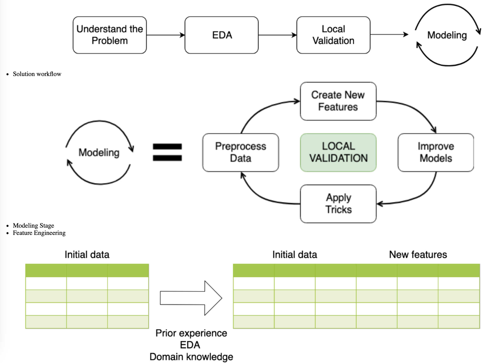

Code
import pandas as pd
import numpy as np
import matplotlib.pyplot as plt
plt.style.use('ggplot')
plt.rcParams['figure.figsize'] = (10, 8)kakamana
April 14, 2023
As part of PySpark, cutting-edge machine learning routines are included, as well as utilities that can be used to create full machine learning pipelines. In this chapter, you will learn more about them.
This Feature Engineering is part of Datacamp course: Winning a Kaggle Competition in Python This course will now have the opportunity to learn about different types of features. In this project, you will modify existing features and create new ones. In addition, you will take appropriate measures to address the missing data.
This is my learning experience of data science through DataCamp. These repository contributions are part of my learning journey through my graduate program masters of applied data sciences (MADS) at University Of Michigan, DeepLearning.AI, Coursera & DataCamp. You can find my similar articles & more stories at my medium & LinkedIn profile. I am available at kaggle & github blogs & github repos. Thank you for your motivation, support & valuable feedback.
These include projects, coursework & notebook which I learned through my data science journey. They are created for reproducible & future reference purpose only. All source code, slides or screenshot are intellactual property of respective content authors. If you find these contents beneficial, kindly consider learning subscription from DeepLearning.AI Subscription, Coursera, DataCamp

To practice creating new features, you will be working with a subsample from the Kaggle competition called “House Prices: Advanced Regression Techniques”. The goal of this competition is to predict the price of the house based on its properties. It’s a regression problem with Root Mean Squared Error as an evaluation metric.
Your goal is to create new features and determine whether they improve your validation score. To get the validation score from 5-fold cross-validation, you’re given the get_kfold_rmse() function
from sklearn.ensemble import RandomForestRegressor
from sklearn.model_selection import KFold
from sklearn.metrics import mean_squared_error
kf = KFold(n_splits=5, shuffle=True, random_state=123)
def get_kfold_rmse(train):
mse_scores = []
for train_index, test_index in kf.split(train):
train = train.fillna(0)
feats = [x for x in train.columns if x not in ['Id', 'SalePrice', 'RoofStyle', 'CentralAir']]
fold_train, fold_test = train.loc[train_index], train.loc[test_index]
# Fit the data and make predictions
# Create a Random Forest object
rf = RandomForestRegressor(n_estimators=10, min_samples_split=10, random_state=123)
# Train a model
rf.fit(X=fold_train[feats], y=fold_train['SalePrice'])
# Get predictions for the test set
pred = rf.predict(fold_test[feats])
fold_score = mean_squared_error(fold_test['SalePrice'], pred)
mse_scores.append(np.sqrt(fold_score))
return round(np.mean(mse_scores) + np.std(mse_scores), 2)
train = pd.read_csv('dataset/house_prices_train.csv')
test = pd.read_csv('dataset/house_prices_test.csv')
print('RMSE before feature engineering:', get_kfold_rmse(train))
# Find the total area of the house
train['totalArea'] = train['TotalBsmtSF'] + train['1stFlrSF'] + train['2ndFlrSF']
# Look at the updated RMSE
print('RMSE with total area:', get_kfold_rmse(train))
# Find the area of the garden
train['GardenArea'] = train['LotArea'] - train['1stFlrSF']
print('RMSE with garden area:', get_kfold_rmse(train))
# Find total number of bathrooms
train['TotalBath'] = train['FullBath'] + train['HalfBath']
print('RMSE with number of bathromms:', get_kfold_rmse(train))RMSE before feature engineering: 36029.39
RMSE with total area: 35073.2
RMSE with garden area: 34413.55
RMSE with number of bathromms: 34506.78You’ve built some basic features using numerical variables. Now, it’s time to create features based on date and time. You will practice on a subsample from the Taxi Fare Prediction Kaggle competition data. The data represents information about the taxi rides and the goal is to predict the price for each ride.
Your objective is to generate date features from the pickup datetime. Recall that it’s better to create new features for train and test data simultaneously. After the features are created, split the data back into the train and test DataFrames
train = pd.read_csv('dataset/taxi_train_chapter_4.csv')
test = pd.read_csv('dataset/taxi_test_chapter_4.csv')
taxi = pd.concat([train, test])
# Convert pickup date to datetime object
taxi['pickup_datetime'] = pd.to_datetime(taxi['pickup_datetime'])
# Create a day of week feature
taxi['dayofweek'] = taxi['pickup_datetime'].dt.dayofweek
# Create an hour feature
taxi['hour'] = taxi['pickup_datetime'].dt.hour
# Split back into train and test
new_train = taxi[taxi['id'].isin(train['id'])]
new_test = taxi[taxi['id'].isin(test['id'])]Let’s work on categorical variables encoding. You will again work with a subsample from the House Prices Kaggle competition.
Your objective is to encode categorical features “RoofStyle” and “CentralAir” using label encoding.
from sklearn.preprocessing import LabelEncoder
train = pd.read_csv('dataset/house_prices_train.csv')
test = pd.read_csv('dataset/house_prices_test.csv')
# Concatenate train and test together
houses = pd.concat([train, test])
# Label encoder
le = LabelEncoder()
# Create new features
houses['RoofStyle_enc'] = le.fit_transform(houses['RoofStyle'])
houses['CentralAir_enc'] = le.fit_transform(houses['CentralAir'])
# Look at new features
print(houses[['RoofStyle', 'RoofStyle_enc', 'CentralAir', 'CentralAir_enc']].head()) RoofStyle RoofStyle_enc CentralAir CentralAir_enc
0 Gable 1 Y 1
1 Gable 1 Y 1
2 Gable 1 Y 1
3 Gable 1 Y 1
4 Gable 1 Y 1The problem with label encoding is that it implicitly assumes that there is a ranking dependency between the categories. So, let’s change the encoding method for the features “RoofStyle” and “CentralAir” to one-hot encoding. Again, the train and test DataFrames from House Prices Kaggle competition are already available in your workspace.
Recall that if you’re dealing with binary features (categorical features with only two categories) it is suggested to apply label encoder only.
Your goal is to determine which of the mentioned features is not binary, and to apply one-hot encoding only to this one.
Gable 2310
Hip 551
Gambrel 22
Flat 20
Mansard 11
Shed 5
Name: RoofStyle, dtype: int64
Y 2723
N 196
Name: CentralAir, dtype: int64le = LabelEncoder()
houses['CentralAir_enc'] = le.fit_transform(houses['CentralAir'])
# Create One-Hot encoded features
ohe = pd.get_dummies(houses['RoofStyle'], prefix='RoofStyle')
# Concatenate OHE features to houses
houses = pd.concat([houses, ohe], axis=1)
# Look at OHE features
print(houses[[col for col in houses.columns if 'RoofStyle' in col]].head(5)) RoofStyle RoofStyle_Flat RoofStyle_Gable RoofStyle_Gambrel \
0 Gable 0 1 0
1 Gable 0 1 0
2 Gable 0 1 0
3 Gable 0 1 0
4 Gable 0 1 0
RoofStyle_Hip RoofStyle_Mansard RoofStyle_Shed
0 0 0 0
1 0 0 0
2 0 0 0
3 0 0 0
4 0 0 0 First of all, you will create a function that implements mean target encoding. Remember that you need to develop the two following steps:
1. Calculate the mean on the train, apply to the test
2. Split train into K folds. Calculate the out-of-fold mean for each fold, apply to this particular folddef test_mean_target_encoding(train, test, target, categorical, alpha=5):
# Calculate global mean on the train data
global_mean = train[target].mean()
# Group by the categorical feature and calculate its properties
train_groups = train.groupby(categorical)
category_sum = train_groups[target].sum()
category_size = train_groups.size()
# Calculate smoothed mean target statistics
train_statistics = (category_sum + global_mean * alpha) / (category_size + alpha)
# Apply statistics to the test data and fill new categories
test_feature = test[categorical].map(train_statistics).fillna(global_mean)
return test_feature.values
def train_mean_target_encoding(train, target, categorical, alpha=5):
# Create 5-fold cross-validation
kf = KFold(n_splits=5,random_state=123, shuffle=True)
train_feature = pd.Series(index=train.index, dtype='float')
# For each folds split
for train_index, test_index in kf.split(train):
cv_train, cv_test = train.iloc[train_index], train.iloc[test_index]
# Calculate out-of-fold statistics and apply to cv_test
cv_test_feature = test_mean_target_encoding(cv_train, cv_test, target,
categorical, alpha)
# Save new feature for this particular fold
train_feature.iloc[test_index] = cv_test_feature
return train_feature.values
def mean_target_encoding(train, test, target, categorical, alpha=5):
# Get the train feature
train_feature = train_mean_target_encoding(train, target, categorical, alpha)
# Get the test feature
test_feature = test_mean_target_encoding(train, test, target, categorical, alpha)
# Return new features to add to the model
return train_feature, test_featureYou will work with a binary classification problem on a subsample from Kaggle playground competition. The objective of this competition is to predict whether a famous basketball player Kobe Bryant scored a basket or missed a particular shot.
bryant_shots = pd.read_csv('dataset/bryant_shots.csv')
# Create 5-fold cross-validation
kf = KFold(n_splits=5, random_state=123, shuffle=True)
# For each folds split
for train_index, test_index in kf.split(bryant_shots):
cv_train, cv_test = bryant_shots.iloc[train_index].copy(), bryant_shots.iloc[test_index].copy()
# Create mean target encoded feature
cv_train['game_id_enc'], cv_test['game_id_enc'] = mean_target_encoding(train=cv_train,
test=cv_test,
target='shot_made_flag',
categorical='game_id',
alpha=5)
# Look at the encoding
print(cv_train[['game_id', 'shot_made_flag', 'game_id_enc']].sample(n=1)) game_id shot_made_flag game_id_enc
4001 20201028 1.0 0.485444
game_id shot_made_flag game_id_enc
8083 20501196 1.0 0.360977
game_id shot_made_flag game_id_enc
399 20000280 1.0 0.327464
game_id shot_made_flag game_id_enc
5998 20400903 1.0 0.661384
game_id shot_made_flag game_id_enc
2606 20101164 1.0 0.295526Of course, binary classification is just a single special case. Target encoding could be applied to any target variable type:
* For binary classification usually mean target encoding is used
* For regression mean could be changed to median, quartiles, etc.
* For multi-class classification with N classes we create N features with target mean for each category in one vs. all fashion The mean_target_encoding() function you've created could be used for any target type specified above. Let's apply it for the regression problem on the example of House Prices Kaggle competition.Your goal is to encode a categorical feature “RoofStyle” using mean target encoding.
train = pd.read_csv('dataset/house_prices_train.csv')
test = pd.read_csv('dataset/house_prices_test.csv')
# Create mean target encoded feature
train['RoofStyle_enc'], test['RoofStyle_enc'] = mean_target_encoding(train=train,
test=test,
target='SalePrice',
categorical='RoofStyle',
alpha=10)
# Look at the encoding
test[['RoofStyle', 'RoofStyle_enc']].drop_duplicates()| RoofStyle | RoofStyle_enc | |
|---|---|---|
| 0 | Gable | 171565.947836 |
| 1 | Hip | 217594.645131 |
| 98 | Gambrel | 164152.950424 |
| 133 | Flat | 188703.563431 |
| 362 | Mansard | 180775.938759 |
| 1053 | Shed | 188267.663242 |
Let’s impute missing data on a real Kaggle dataset. For this purpose, you will be using a data subsample from the Kaggle “Two sigma connect: rental listing inquiries” competition.
Before proceeding with any imputing you need to know the number of missing values for each of the features. Moreover, if the feature has missing values, you should explore the type of this feature.
id 0
bathrooms 0
bedrooms 0
building_id 13
latitude 0
longitude 0
manager_id 0
price 32
interest_level 0
dtype: int64| building_id | price | |
|---|---|---|
| 0 | 53a5b119ba8f7b61d4e010512e0dfc85 | 3000.0 |
| 1 | c5c8a357cba207596b04d1afd1e4f130 | 5465.0 |
| 2 | c3ba40552e2120b0acfc3cb5730bb2aa | 2850.0 |
| 3 | 28d9ad350afeaab8027513a3e52ac8d5 | 3275.0 |
| 4 | NaN | 3350.0 |
You’ve found that “price” and “building_id” columns have missing values in the Rental Listing Inquiries dataset. So, before passing the data to the models you need to impute these values.
Numerical feature “price” will be encoded with a mean value of non-missing prices.
Imputing categorical feature “building_id” with the most frequent category is a bad idea, because it would mean that all the apartments with a missing “building_id” are located in the most popular building. The better idea is to impute it with a new category.
from sklearn.impute import SimpleImputer
# Create mean imputer
mean_imputer = SimpleImputer(strategy='mean')
# Price imputation
twosigma[['price']] = mean_imputer.fit_transform(twosigma[['price']])
# Create constant inputer
constant_imputer = SimpleImputer(strategy='constant', fill_value='MISSING')
# building_id imputation
twosigma[['building_id']] = constant_imputer.fit_transform(twosigma[['building_id']])
twosigma.isnull().sum()id 0
bathrooms 0
bedrooms 0
building_id 0
latitude 0
longitude 0
manager_id 0
price 0
interest_level 0
dtype: int64